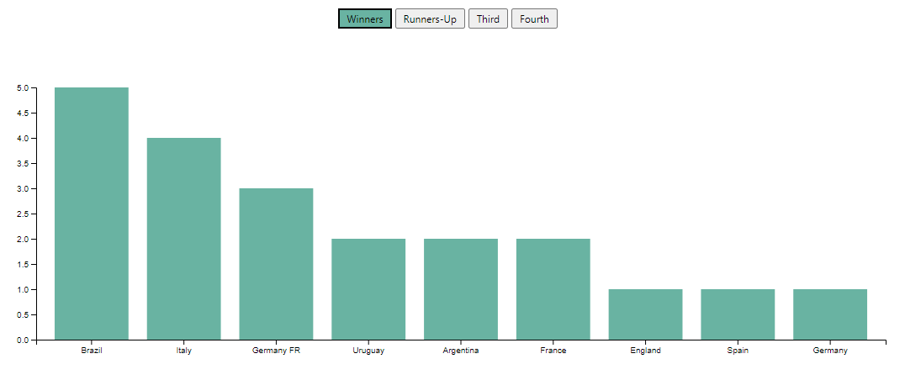

Documentation
I was inspired to find a dataset related to the World Cup because I had been watching the games for 2022 World Cup and wanted to see what visualization I could create using World Cup data. I found the dataset on Kaggle and began exploring ways to display the data. I was able to make the charts displaying the hosts and winners of the World Cup since 1930.
Design Process
The design process for this visualization was to be able to show interactive graphs using year as the x-axis and a combination of three variables that number as the y-axis. Vising D3 website I found an example of an interactive graph that allows you to switch variables for the y-axis. First, I loaded the data and had some trouble implementing my data in the graph. After a decent amount of struggle, I could finally load my data and see it on the graph. The next step was to add the buttons and have them updated for the respective variables. This was done by calling the update function.
I also wanted to be able to map countries to try on the x-axis and the number of times they have gotten one of tops top of rankings or hosted. First, I had to figure out how D3 was handling the previous data. My first few attempts did not go well, but eventually; I figured out a few different techniques.
Design Choices
One design choice was to limit the countries shown on the x-axis. I made this decision because it didn’t look visually appealing to have countries included that did not make the criteria. I also ordered the country ranking graphs from highest to lowest which provided a more aesthetically pleasing visualization. As for the charts with the year indicated on the x-axis, I decided to keep them in chronological order. I also decided to highlight the active buttons to indicate what chart was currently displaying.
Learnings
I wanted to know the top countries in terms of who has hosted and who gets the top in rankings.
I wanted to know if the number of goals scored was directly correlated with the number of teams playing, and also the number of games played.
I expected countries to have hosted the World Cup just one time, but to my surprise, there were five countries that hosted the World Cup more than once. It is interesting to see the history of countries in the dataset, for example, I noticed a country named “Germany FR” which appears to be the team playing before the fall of the Berlin Wall. I was conflicted if I should combine “Germany FR” with “Germany”, but I decided to leave it as the dataset had it. I also noticed a correlation between “Goals Scored”, “Qualified Teams”, and “Matches Played”, trending upwards over time.
